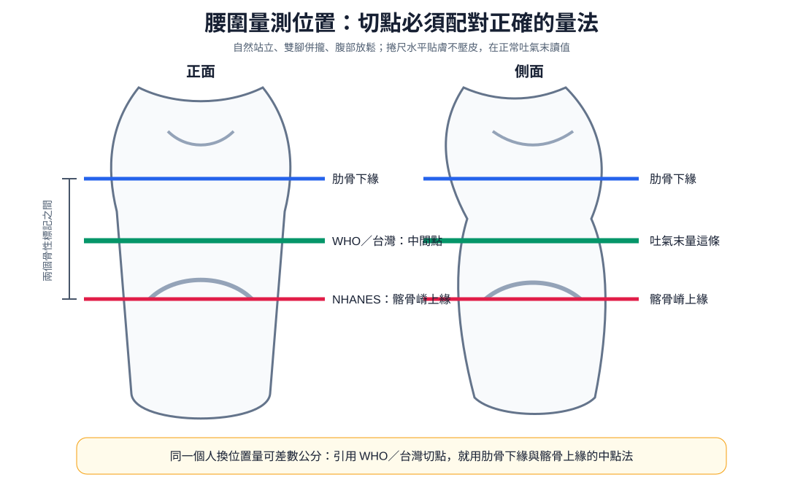
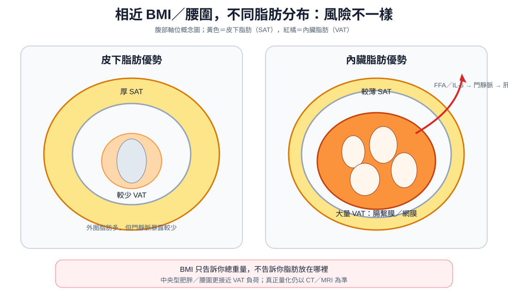

疾病內分泌
Metabolic syndrome ｜ 代謝症候群 · MetS
筆記更新 2026-07-28·整理狀態：可用
其他名稱 11
Metabolic syndrome · 代謝症候群 · MetS · 肥胖 · Obesity · BMI · 腰圍 · Central obesity · 中央型肥胖 · Insulin resistance · 胰島素阻抗
診斷：五項取三
| 項目 |
台灣（國民健康署） |
NCEP ATP III |
| 腰圍（不是 BMI） |
男 ≥90 cm／女 ≥80 cm |
男 ≥102 cm／女 ≥88 cm |
| 三酸甘油酯 TG |
≥150 mg/dL |
同左 |
| HDL-C |
男 <40／女 <50 mg/dL |
同左 |
| 血壓 |
≥130/85 mmHg（收縮或舒張，任一達標即成立） |
同左 |
| 空腹血糖 |
≥100 mg/dL |
≥100（2005 修訂）／≥110（2001 原版） |
五項地位平等，任三項成立即診斷，沒有必要條件。判定名單上沒有的四樣：BMI、總膽固醇、LDL-C、白蛋白尿。 血脂只認 TG 高 ＋ HDL 低——胰島素阻抗型血脂異常的顆粒變小變多、LDL-C 數值常常正常，用 LDL-C 判定會漏掉整群人（LDL-C 是 Statin 的治療標的，不是判定項目）。
體位切點：BMI 與腰圍是兩套獨立指標，不能互相取代
| 體位 |
台灣（國民健康署） |
國際（WHO） |
| 正常 |
18.5 ≤ BMI < 24 |
18.5 ≤ BMI < 25 |
| 過重 |
24 ≤ BMI < 27 |
25 ≤ BMI < 30 |
| 肥胖 |
BMI ≥ 27（輕度 27–29.9｜中度 30–34.9｜重度 ≥35） |
BMI ≥ 30 |
方向永遠是：台灣的數字比西方小（腰圍 90／80 vs 102／88；BMI 24／27 vs 25／30），寫成「台灣切點比國際高」不必算就知道錯。BMI 正常但腰圍超標在亞洲族群並不少見，只看 BMI 就會放行；BMI ＝ 體重 (kg) ÷ 身高 (m)²，分母是公尺的平方（150 cm → 1.50² = 2.25，不是 150²）。

WHO／台灣量法取最低肋骨下緣與髂骨嵴上緣的中點；NHANES 則直接量髂骨嵴上緣。兩套位置不能與另一套切點混用。自製示意圖。
臨床表現與鑑別
- 典型是沒有症狀，絕大多數是健檢或因其他事抽血時被拼湊出來的。提示性：中央型肥胖、acanthosis nigricans 黑色棘皮症（後頸與腋下天鵝絨樣色素沉著，胰島素阻抗的皮膚表現）、skin tags、打鼾與白天嗜睡、意外發現的脂肪肝或 ALT 輕度升高
- 少見但重要：以急性心血管事件或新診斷的糖尿病當作第一個表現——代謝症候群沒有「症狀期」，錯過就直接到終點（→ Chest pain↗）

相近 BMI／腰圍可以有完全不同的脂肪分布：皮下脂肪在腹壁外圈，內臟脂肪則位於腹腔內、包在腸繫膜與網膜，游離脂肪酸與發炎訊號直接進門靜脈。自製示意圖。
治療
| 階梯 |
處置 |
重點 |
| ① 減重（核心） |
目標減去現有體重的 5–10% |
唯一一個「一次改善五項」的介入；要給具體公斤數（80 kg 的人＝減 4–8 kg），不要只說「多運動」 |
| ② 飲食與運動 |
減少含糖飲料、精製糖與飽和脂肪，地中海或 DASH 飲食；每週 ≥150 分鐘中等強度有氧 ＋ 每週 2 次阻力運動 |
即使體重沒掉，運動本身就能減少內臟脂肪、改善胰島素敏感性 |
| ③ 戒菸、限酒、治療睡眠呼吸中止 |
打鼾 ＋ 白天嗜睡 ＋ 難控制的高血壓 → 安排睡眠檢查 |
阻塞性睡眠呼吸中止沒治好，血壓與減重都會卡住 |
| ④ 各成分依各自指引處理 |
血脂 Statin｜血糖 Antidiabetics｜血壓依高血壓指引 |
這不是「治療代謝症候群」，是治療它的每一個成分 |
| ⑤ 藥物減重／代謝手術 |
GLP-1 受體促效劑等減重藥物；達門檻者評估代謝手術 |
生活型態介入失敗、且體位與共病風險高者才進到這一階 |
禁忌與陷阱
相關連結